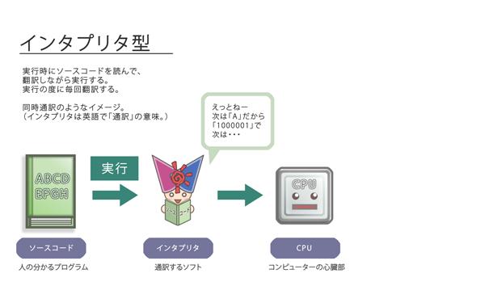
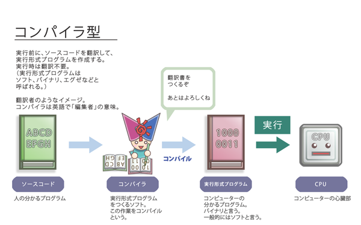

コンピュータ(CPU)が直接理解し実行することのできる唯一の言葉は、機械語（マシン語）とよばれるものだけです。機械語で記述されたプログラムをネイティブコードといいます。ネイティブコードは複雑なルールで決められた1と0からなる2進数で表現されていて、人間が簡単に理解できる形式にはなっていません。簡単な命令さえ、この機械語を使って指示するには大変な労力がかかります。
そこで、人間が直接扱うには難しい機械語に代わって、より人間が扱いやすい形で命令・指示することができるように作られたのがプログラミング言語です。
BASIC、C、C++、COBOL、FORTRAN、Javaなどいろいろな種類のプログラミング言語があります。これらのプログラミング言語を使って書いたもの（ソースコード）は、コンピュータは直接理解できないため、機械語に翻訳、ネイティブコードに変換しています。（スクリプト言語のように機械語に変換しないものもあります。）
翻訳のしかたは、プログラミング言語によって違います。1行ずつ翻訳しながら実行するものをインタプリタ
型言語といいます。BASICはインタプリタ型言語です。また、一括して機械語に変換（EXEファイルを作成）する言語をコンパイラ型言語といいます。コンパイラ型は、インタプリタ型に比べると実行速度が速いという利点があります。

